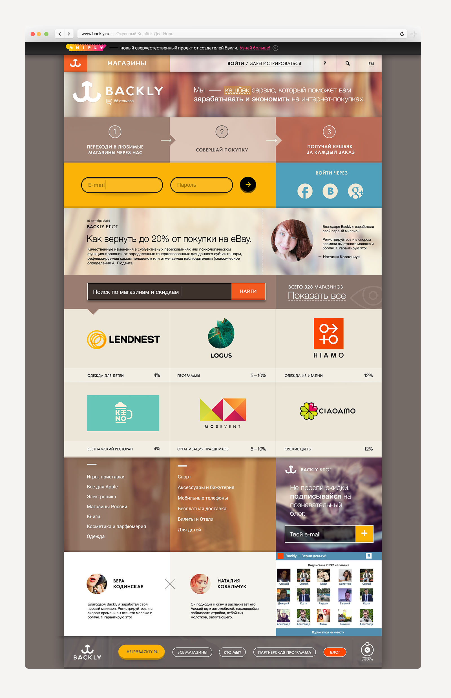
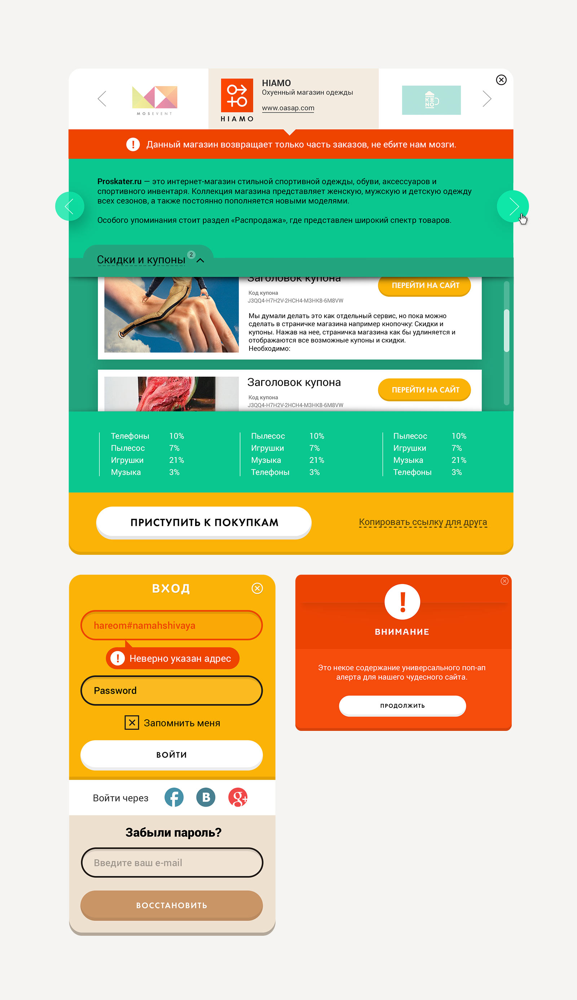
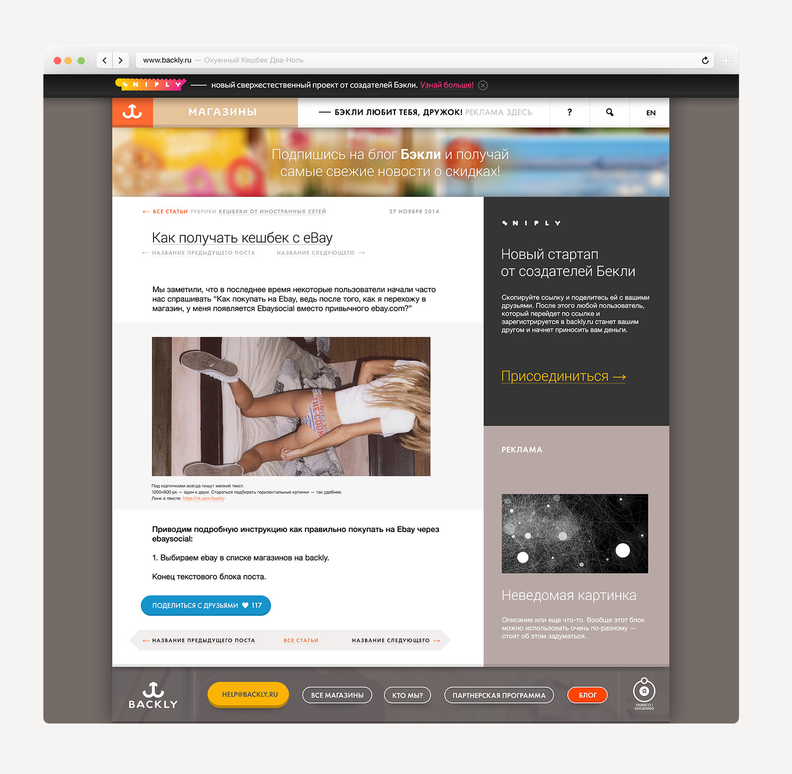
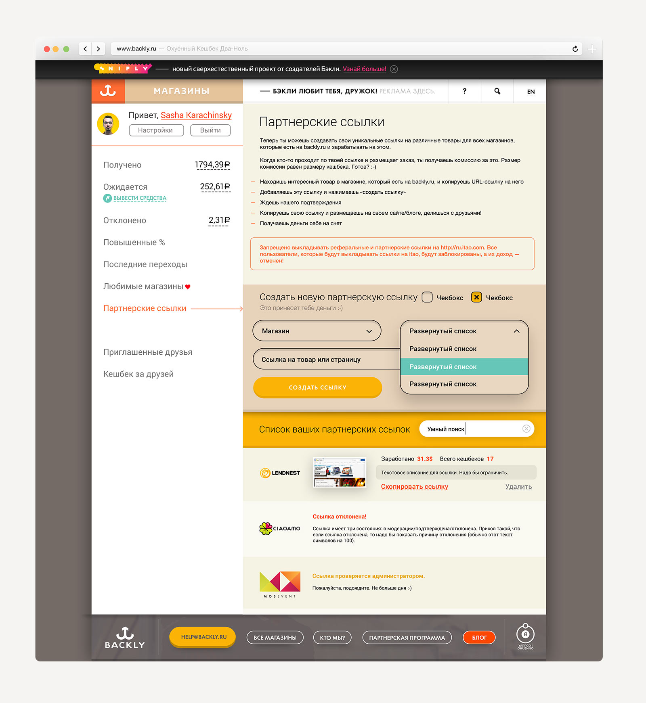

После успешного запуска около года назад (февраль 2014), команда Backly попросила меня сделать ревью и обновить дизайн площадки.
В результате была разработана новая палитра, переработана сетка сайта и детально проработан интерфейс и механика взаимодействия системы с пользователем.
Главная страница
Продуманные всплывающие окна
Удобный и красивый блог как средство продвижения
Настраеваемый личный кабинет с кучей полезной статистики
Спасибо Саше за работу! Мы второй раз заказываем дизайн у Саши. И нам очень нравится как растет крутость его решений вместе с нашим требованиями :) Саша действительно делает все, как мы просим — ярко и ах*ено. Обязательно продолжим работу с ним, другого такого, яркого и ах*нного наверное и не найти, да мы и не хотим ;)